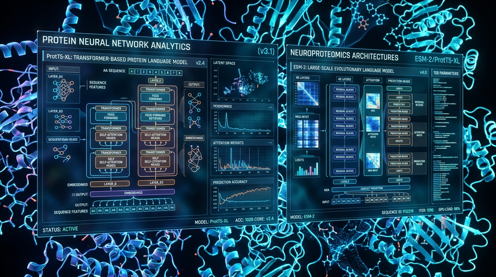
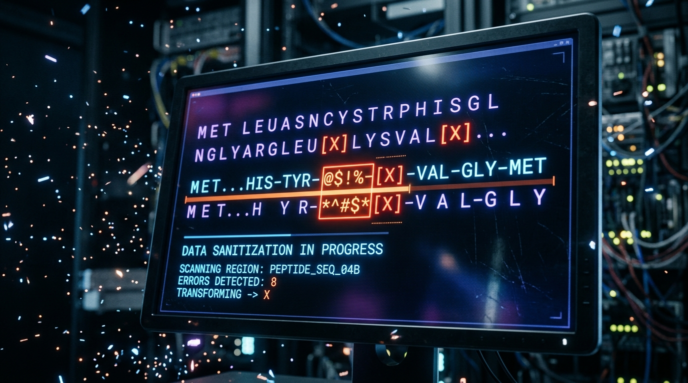
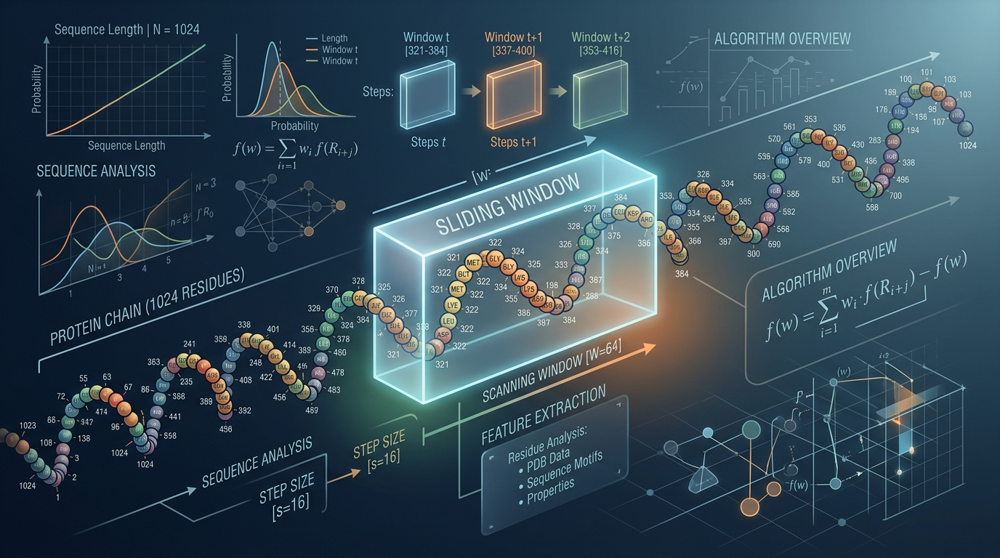
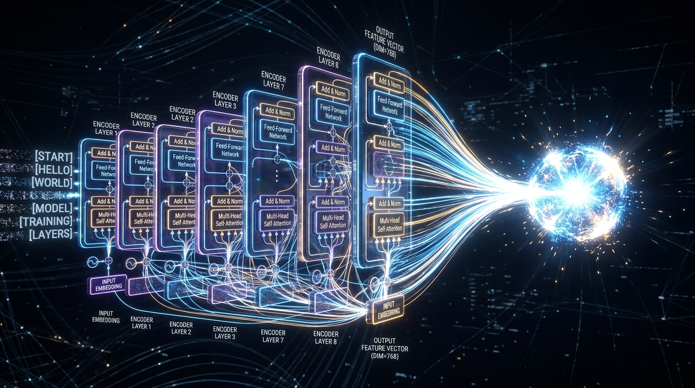

This specification details the design and implementation of the sequence preprocessing and feature extraction layer optimized for predicting Gene Ontology Molecular Function (MF) terms.
Following a comparative analysis of One-hot+CNN, ESM-2, and ProtT5, the ProtT5-XL (encoder-only) architecture is selected as the primary feature extractor for maximum predictive accuracy in multi-label classification. ESM-2 (t33_650M_UR50D) is designated as the fallback for environments with constrained computational resources.


T5Tokenizer for ProtT5; EsmTokenizer for
ESM-2).<cls> or <s> for start-of-sequence and
</s> or <eos> for end-of-sequence as required by the model.
| Parameter | Primary Model (ProtT5-XL) | Efficient Model (ESM-2 650M) |
|---|---|---|
| Model ID | Rostlab/prot_t5_xl_uniref50 |
facebook/esm2_t33_650M_UR50D |
| Architecture | Transformer (Encoder-only) | Transformer (Encoder-only) |
| Output Dim | 1024 | 1280 |
| Precision | float16 / bfloat16 | float16 / float32 |

python >= 3.8pytorch >= 1.12transformers >= 4.20fair-esm (for ESM-2 support)half() precision.